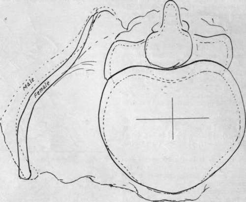

Pelvis
Description
This section is from the book "The Anatomy Of The Human Skeleton", by J. Ernest Frazer. Also available from Amazon: The anatomy of the human skeleton.
Pelvis
Notice first of all the position of the pelvis : it is placed so that the cavity it encloses opens forwards as well as upwards, and the ilio-pectineal lines on the innominate bones are directed obliquely downwards and forwards. This, combined with the direction of the sacrum, produces the position of the whole pelvis that is often described as " oblique".
Fig. 98.- Right innominate bone from the inner side.
The cavity is divided into two parts by an oblique plane that corresponds with the level of the ilio-pectineal lines. These lines, with the promontory of the sacrum behind and the upper part of the pubes in front, constitute what is termed the brim of the pelvis, and the cavity below the level of the brim is that of the true pelvis, while the expanded and open portion above the brim forms the abdominal or false pelvis : it is really a part of the true abdominal cavity.
The passage through the level of the brim into the true pelvis is called the inlet or upper aperture of that cavity, and the lower opening is termed the outlet or lower aperaturc. The sacrum is fixed between the innominate bones by strong posterior sacro-iliac ligaments (see p. 125). It is also attached to these bones (Fig. 99) along the length of its borders by the great sacro-sciatic ligaments passing to the tuberosities of the ischia, and by the lesser ligaments deep to ^ these and fastened by their apices to the ischial spines : these ligaments also reach the coccyx.
Now examine the outlet of the pelvis (Fig. 100). Its bony boundaries antero-late-rally are provided by the ischial tuberosities and ischio-pubic rami, and by meeting in front at the lower part of the symphysis they form the pubic or subpubic arch. The coccyx limits the outlet behind, and between this and the tuberosity of the ischium stretches the great sciatic ligament on each side : in the recent state a ligamentous transverse band below the symphysis, called the subpubic ligament, rounds off the angle made by the meeting of the bones of each side.
It is in the width of the pubic arch that the most striking difference is seen between the male and female pelvis (Fig. 100) : in the latter the lines of the rami form a right angle with each other, whereas the male arch is only about 70 degrees to 75 degrees or even less.
It is apparent at a glance that the posterior wall of the true pelvis is higher than the anterior : the vertical depth of the back wall is between 5 and 6 inches, and that of the front wall about-2 inches. The plane of the pelvic inlet forms an angle of about 60 degrees with the horizon, whereas that of the outlet is inclined at an angle of about 15 degrees, open in the opposite direction.
Fig. 99.-Right innominate in situ, with sacrum and ligaments.
Fig. 100.-Outlet of pelvis seen from below, with the pubic outlines in male and female.
Consequently (Fig. 101) the axis of the cavity, extending from inlet to outlet, is curved with a backward convexity.
The size of the cavity or passage of the true pelvis is naturally a matter of great importance to the obstetrician, and it is necessary to know the average measurements of the different parts of the cavity. For this purpose arbitrary points are taken for measurement, and different observers have made use of different standards ; but there are certain diameters which are recommended by their natural value, so so speak, and these are : (1) Antero-posterior or conjugate, in the middle line ; (2) Transverse, at the widest spot : (3) Oblique (valuable in considering the mechanism of labour, in which the foetal head is obliquely placed), between the sacro-iliac joint and the situation on the opposite wall of the cavity corresponding with the level of the ilio-pectineal eminence. These measurements on the upper aperture of the male pelvis, i.e., at the brim, give as an average-
(1) 4 inches, (2) 5 inches, (3) 4J inches. In the female they are all increased to-(1) 4$ inches,
(2) inches, (3) 5 inches. (The conjugate is measured from the sacral promontory to the top of the symphysis).
At the lower aperture or outlet the anteroposterior diameter admits of increase through mobility of the coccyx, but the averages in the male may be given as-(1) 3J inches, (2) 3J inches,
(3) 3i inches ; in the female as-(1) 4^ to 5 inches,
(2) 4$ inches, (3) 4J inches. Speaking roughly, the diameters in the female show an increase of J inch or more at the upper aperture and 1 inch at the lower aperture.
The corresponding diameters half-way down the cavity are also of interest. In the male they average about-(1) 4I inches, (2) 4! inches, (3) 4$ inches ; in the female-(1) 5$ inches, (2) 5 inches,
(3) 5 1/2 inches-
The least increase is in the transverse diameter : possibly the less curved sacrum in the female accounts for the greater increase in the other measurements.
If we now compare the measurements in the female pelvis from above downwards we find that the greatest diameter is transverse above, oblique in the middle, and antero-posterior below : this change is correlated with and responsible for the rotation of the fcetal head that places its long axis in the sagittal direction.
Fig. 101.-Diagram to show the angles made with the horizontal line by the brim and ischio-pubic ramus respectively when the pelvis is in the standing position ; also to show the direction of the axis of the cavity.
Fig. 102 is an outline of male and female types drawn to the above measurements and reduced to half size. It exhibits also certain sexual features of the Ilium, for the male bone is seen to have a wider iliac fossa with an anterior superior spine somewhat incurved : the female bone has a smaller fossa, but more open, and the anterior spines are slightly wider apart, though the crest is not so prominent. The outlines are placed so that the pubes and anterior superior spines fall together in both-which is not quite a natural coincidence, for the bony spine is further forward in the female- and it can be seen that the pelvis, looked at from above, has its sexual characters, though these are not nearly so marked as they are when it is seen from below.
The general characters of female bones are usually well exemplified in the pelvis.
Looked at from the side (Fig. 99) the greater and lesser sciatic notches on the innominate bones are seen to be converted into foramina by the great and small sacro-sciatic ligaments: the former of these bands can be traced as a falciform edge along the inner side of the tuber ischii.
Notice also that, when the pelvis is in position, the vertical plane of the anterior superior spines is only just behind that of the symphysis in men, and just in front of it in women, owing to the slightly greater obhquity of pelvis in them.
Further details of pelvic structure, including other minor sexual characters, will be better considered in connection with the innominate bones, while certain others have already been discussed under the Sacrum ; but before returning to the os inno-minatum it may be pointed out here that the distinction between male and female pelvis can be made as early as the third or fourth month of development, and it can be stated that the appearance of the pubic arch (Fig. 100) is the best and most reliable test of sex in the bony pelvis.
Fig. 102.-Outlines drawn from a series of average measurements of male and female bones and superimposed for comparison. The male outline is interrupted. It can be seen that the female pelvis is broader and deeper, while the false pelvis is not so wide as in the male, nor its crest so prominent; the male crest is also more curved and turned in front, but this last character is not usually so marked as it appears in this imaginary outline. It must not be forgotten that the female false pelvis is relatively wider than it seems in the diagram, because of shorter stature.
Continue to: